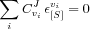
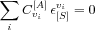
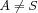
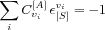

A particularly useful and important feature of MCA is that it can relate the kinetic properties of the individual reactions (local properties) with (global) properties of the whole intact pathway. This is done through the connectivity theorems [
Kacser73] that relate the control coefficients and the elasticity coefficients of steps with common intermediate species.
The connectivity theorem for flux-control coefficients [
Kacser73] states that, for a common species
S, the sum of the products of the flux-control coefficient of all (
i) steps affected by
S and its elasticity coefficients towards
S, is zero:

For the concentration-control coefficients, the following two equations apply [
Westerhoff84]:
, where 

The first equation applies to the case in which the reference species
A is different from the perturbed species
S. Whereas the second applies to the case in which the reference species is the same as the perturbed species.
The connectivity theorems allow MCA to describe how perturbations on species of a pathway propagate through the chain of enzymes. The local (kinetic) properties of each enzyme effectively propagate the perturbation to and from its immediate neighbors.